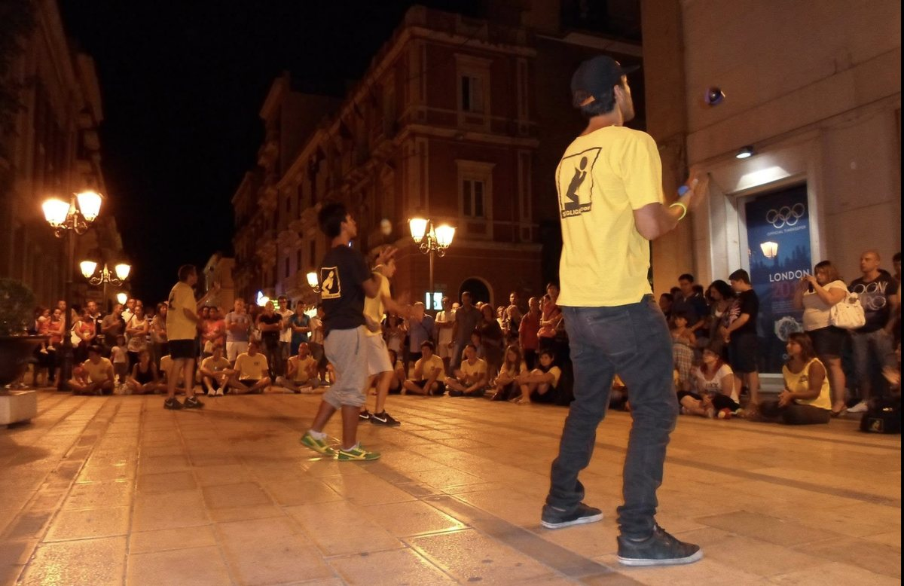
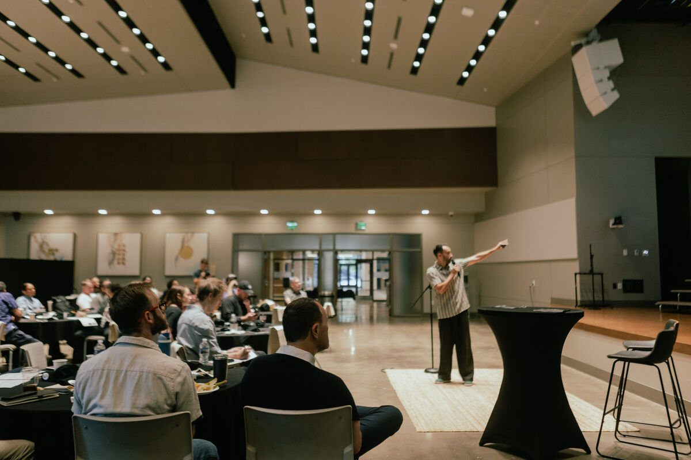
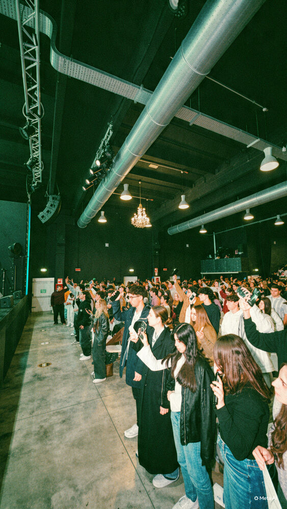

Luca Caruso.
01 / 06

swipe →
2012
And got a burden to see people experience Jesus.


2012 · Mission2018–2025
Finding new ways to reach this generation with the Gospel through media.
 Jesus Revolution
Jesus Revolution2025–26
I was selected as one of 11 initiatives for OneHope’s Catalyze Lab in the US.


Catalyze Lab · NashvilleOn October 31st
316



I believe we’re just scratching the surface of what’s possible with digital evangelism.